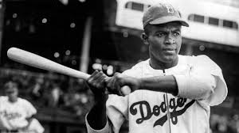

My Hero
Click here to return to my homepage.

Jackie Robinson was one of the first African American baseball players. He got into the show buy his natural skill in baseball, but the people did not want him in beacuse of the color of his skin. Eventually, he overcame this challenge and became on of the best baseball players there is to date. It was not a easy road for him, he was not allowed to play sometimes and could not stay in hotels with his team.
Jackie Robinson has inspired man people and changed the way people looks at baseball and sports. He has broken record and given justice to all people of color. He has also opened my doors of oportunities to people all around the world. Because of Jackie Roinson and some other baseball heros, the game has become much more exiting and fun to play and watch. He will go down in the book as one of the greatest in the sports world. I have selected this individual as a hero becaues he went against many people and did not give up to achieve his goal.
Click here to read more about Jackie Robinson